I am currently a Senior Deep Learning Researcher at Qualcomm AI Research, where I am part of the Efficient LLM team led by Mingu Lee and Chris Lott. Our research is centered on lossless inference acceleration methods, efficient caching, and the design of efficient architectures for language modeling. Previously, I was involved with Compiler Optimization team briefly under the guidance of Will Zeng and Chris Lott, focusing on designing optimizations for running deep networks on non-GPU devices.
I hold an MS in Robotics Research from Carnegie Mellon University (CMU), where my research was directed towards control theory, computer vision, and reinforcement learning with applications in surgical robotics. I had the privilege of conducting my research under the mentorship of Professor Howie Choset and Professor John Galeotti, and doctors of UPMC.
During my undergraduate studies at IIIT Delhi, I collaborated with Dr. Sayan Basu Roy and Dr. P. B. Sujit on projects involving adaptive control, parametric uncertainty, and multi-agent systems. I was honored with the department's (ECE) gold medals for best academic performance and all-round excellence. I still collaborate with Dr. Sayan for fun!
Additionally, I participated in CMU's RISS 2019 summer program, where I worked under the guidance of Professor Katia Sycara on multi-agent task allocation problems.
Email / CV / Google Scholar / Github
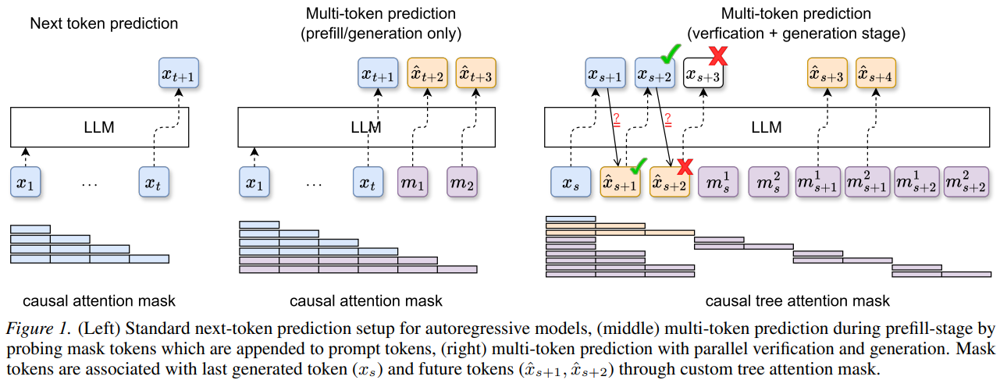
Proposes a training-free method for multi-token prediction by probing the model's embedding space, enabling faster inference through simultaneous prediction of multiple future tokens without any fine-tuning. Outperforms lookahead decoding with 12–17% improvement in average acceptance length and 6–15% improvement in wall-time speedup.
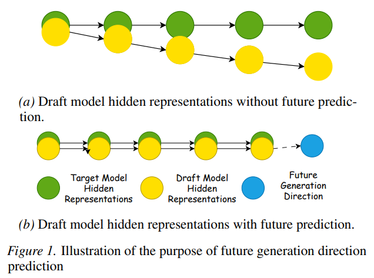
Introduces a speculative sampling method that conditions draft generation on contemplated future context, improving acceptance rates and overall throughput in LLM inference. ConFu outperforms Eagle3 by 8–11% on Llama 3 models and by ~20% on Qwen3-4B.
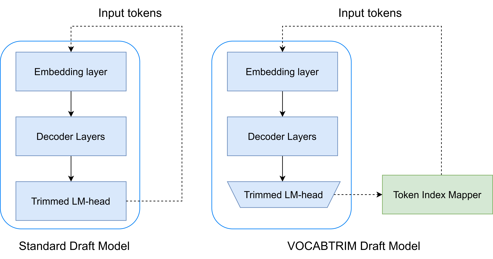
Speculative decoding (SpD) speeds up LLM inference by using smaller draft models to propose token sequences, which are then verified by a larger base model. VOCABTRIM introduces a training-free method to reduce the overhead of drafting by pruning the vocabulary used during draft generation. By retaining only the most frequently accepted tokens from the target model, VOCABTRIM significantly reduces memory-bound latency—especially beneficial for edge devices. Despite a slight drop in acceptance rate, it achieves up to 16% speed-up on Llama-3.2-3B-Instruct in Spec-Bench, making it a practical optimization for real-world deployment.
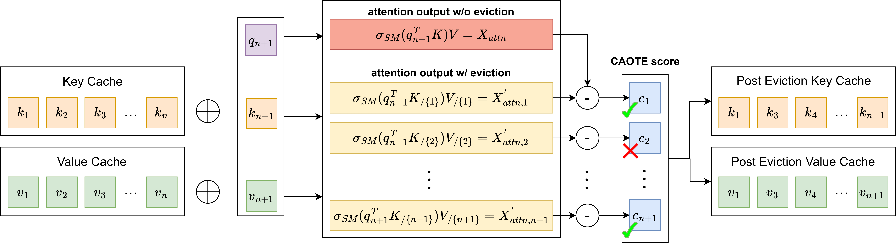
CAOTE introduces a principled token eviction strategy for long-context LLMs that balances memory efficiency with inference quality. Unlike prior methods that rely solely on attention scores, CAOTE estimates each token's contribution to the attention output using both attention weights and value vectors. This hybrid metric allows CAOTE to explicitly optimize for eviction error, ensuring that removed tokens minimally impact model predictions. The method improves latency and downstream task accuracy, and also serves as a meta-heuristic that enhances existing eviction strategies across diverse models and tasks.
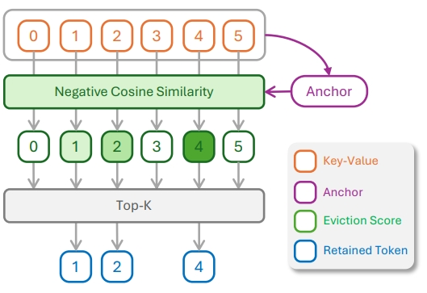
KeyDiff introduces a training-free cache eviction method based on key similarity, enabling efficient long-context inference in resource-constrained environments. By identifying geometrically distinctive keys that correlate with high attention scores, KeyDiff retains the most impactful tokens without relying on attention mechanisms—making it compatible with optimized attention implementations like FlashAttention. It achieves near-baseline performance with ~23% KV cache reduction and up to 30% latency reduction, validated across Llama and Qwen models on LongBench and Math500.
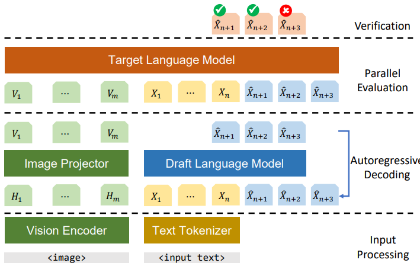
This paper explores the application of speculative decoding to enhance the inference efficiency of multimodal large language models (MLLMs), specifically the LLaVA 7B model. The key contribution is demonstrating that a language-only model can serve as an effective draft model for speculative decoding, achieving significant speedups without the need for image tokens
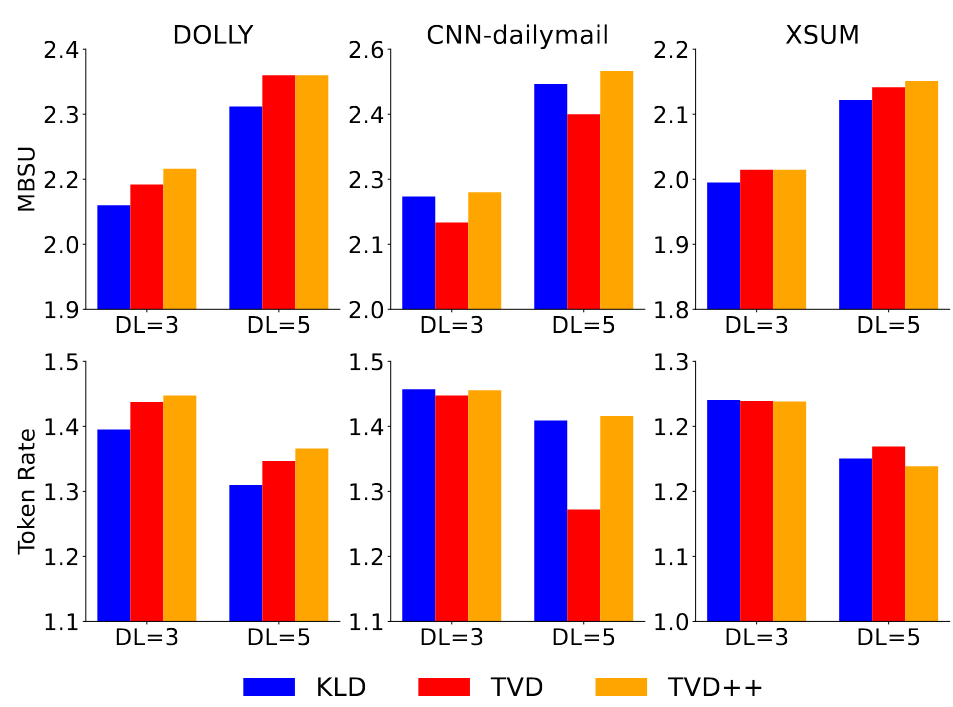
This paper proposes a framework for training draft models directly aligned with chat-fine-tuned large language models (LLMs). The key contribution is the introduction of the Llama 2 Chat Drafter 115M, which achieves up to 2.4× speed-up in inference relative to autoregressive decoding, using a novel Total Variation Distance++ (TVD++) loss for improved alignment
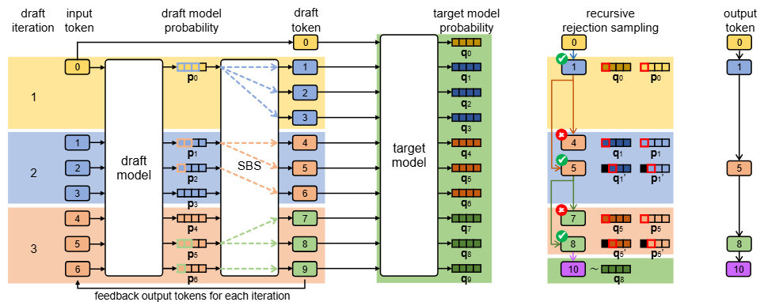
This paper presents Recursive Speculative Decoding (RSD), a novel tree-based method that samples draft tokens without replacement to maximize diversity and efficiency. The key contribution is the empirical demonstration that RSD outperforms baseline methods in both fixed draft sequence length and fixed computational budget scenarios, significantly accelerating LLM inference
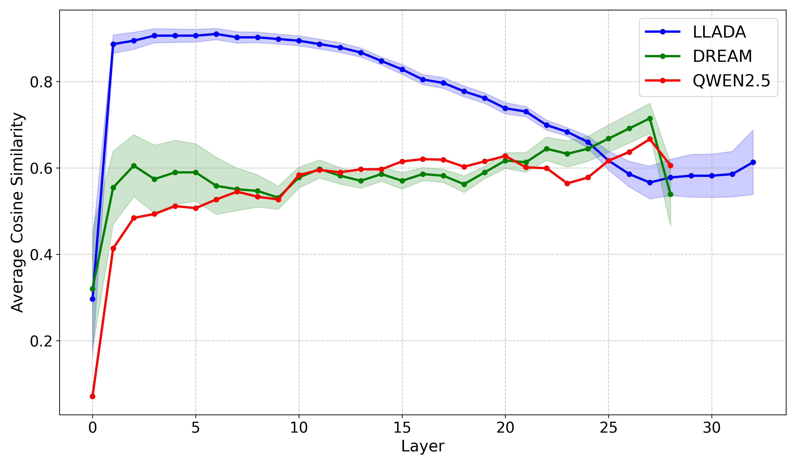
Investigates the representation structure of diffusion vs. autoregressive LLMs and how layer-skipping at inference time can be leveraged to accelerate generation without sacrificing output quality.
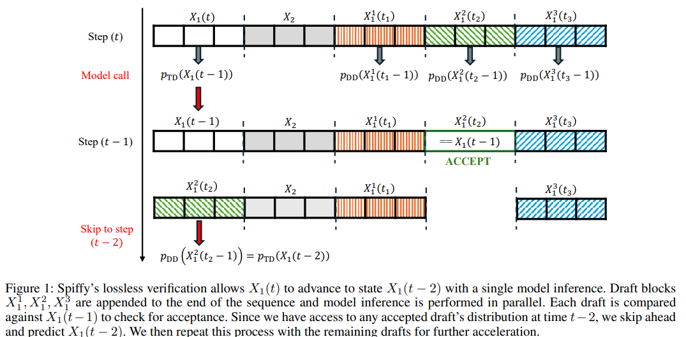
Adapts speculative decoding to diffusion-based language models, achieving lossless acceleration by exploiting the iterative denoising structure of diffusion LLMs to propose and verify token blocks efficiently.
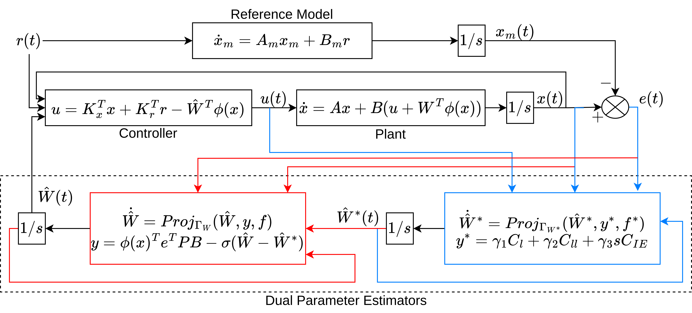
Introduces a novel control architecture that employs a dual adaptation scheme to handle dynamical systems with time-varying uncertain parameters. Key contributions include the integration of projection and $\sigma$-modification algorithms to achieve global tracking error stability, and the use of a less restrictive initial excitation (IE) condition instead of the traditional persistence of excitation (PE) requirement for parameter estimation
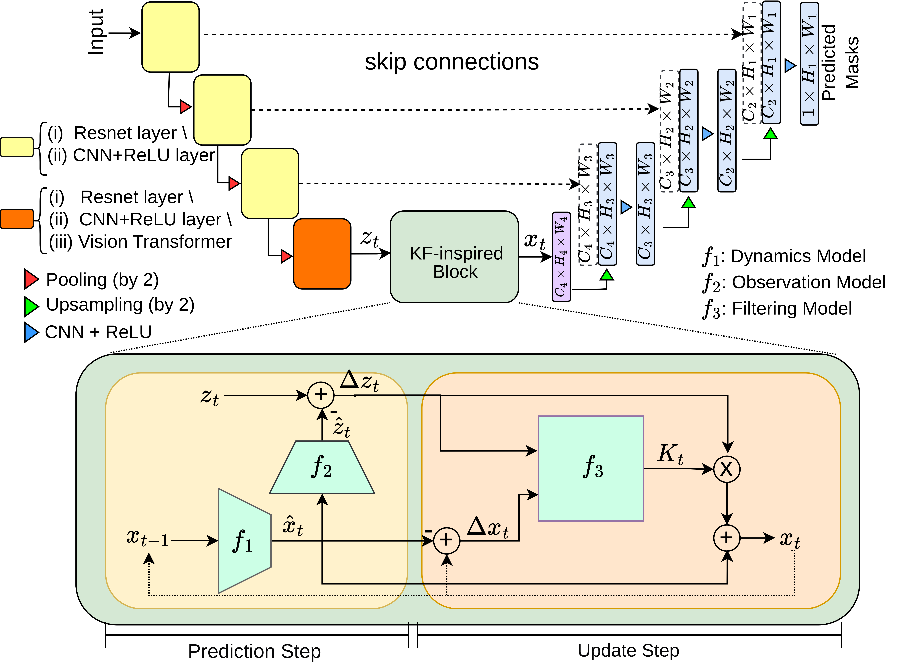
A novel approach that combines classical Kalman Filter techniques with data-driven learning to improve needle segmentation in 2D ultrasound images. The key contributions include a framework compatible with encoder-decoder architectures, superior performance with a 15% reduction in pixel-wise needle tip error and an 8% reduction in length error, and the implementation of a learnable filter for non-linear needle motion
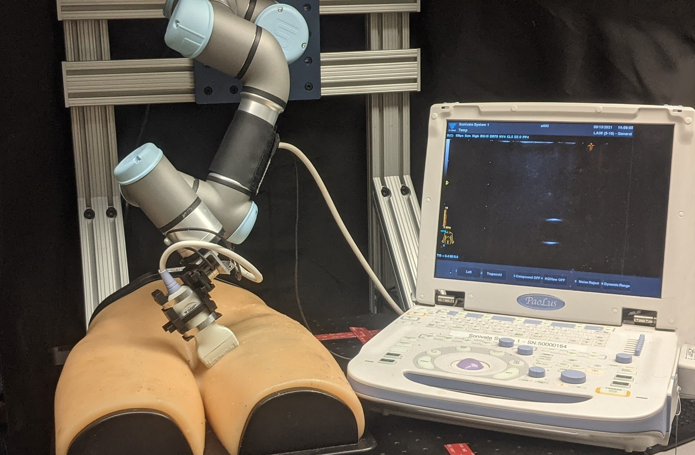
Proposes an innovative robotic ultrasound system that leverages Bayesian Optimization (BO) and hybrid force control to autonomously scan regions for high-quality diagnostic images. Key contributions include the use of Gaussian processes to estimate a quality map based on expert demonstrations, and the integration of deep convolutional neural networks for real-time image quality feedback, achieving high accuracy in probe positioning and force application
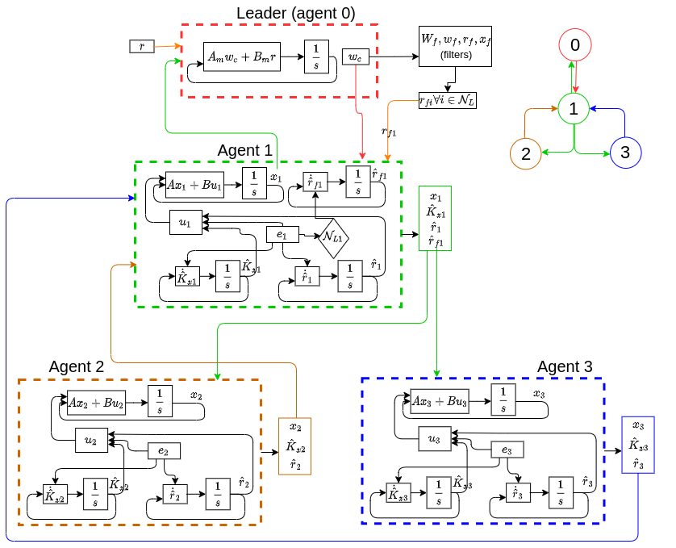
introduces a novel distributed model reference adaptive control (DMRAC) framework for multi-agent systems. Key contributions include the use of a closed-loop reference model (CRM) to enhance transient performance and the implementation of cooperative initial excitation (IE) for improved parameter estimation without the need for persistent excitation (PE) conditions
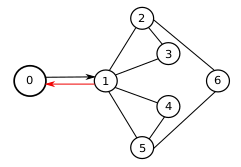
presents a distributed control framework that integrates closed-loop reference models (CRM) to enhance the transient performance of multi-agent systems. Key contributions include the use of cooperative initial excitation (IE) for improved parameter estimation without relying on persistent excitation (PE) conditions, and the implementation of distributed reference input estimation to ensure robust and adaptive control across the network
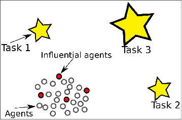
explores the use of leaders and predators to influence robotic swarms in performing various tasks. Key contributions include the analysis of different swarm models (shepherding, Couzin's, and physicomimetic) using Monte-Carlo simulations, and the demonstration that predator-based swarm splitting and steering significantly outperforms other methods, even with large numbers of agents
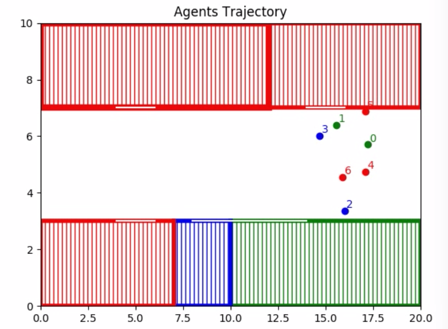
We propose to solve task allocation problem in heterogeneous agents using mix integer linear program with collision avoidance and communication breakage constraints
The website style is from here
{kind=link}